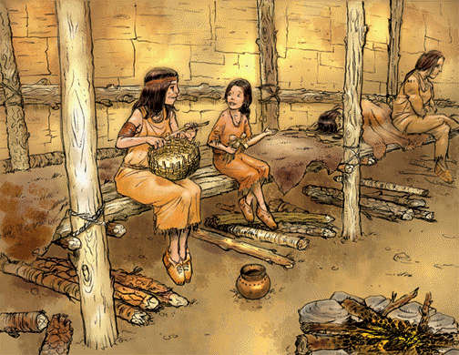
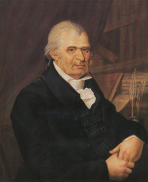
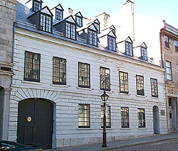
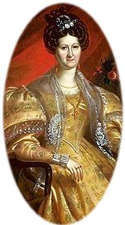
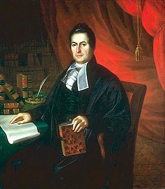
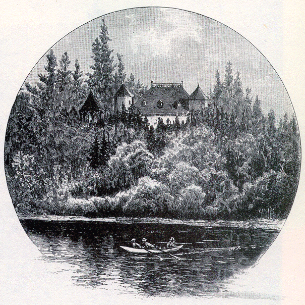

|
Samuel
et Catherine Joseph Papineau
Louis-Joseph Papineau
Samuel Papineau dit Montigny,
l'ancêtre
Samuel est né à Montigny, au
Poitou, en 1670. Il est le fils de Samuel Papineau, commerçant, et de
Marie Delain. Il vient en Nouvelle-France en 1688 comme engagé dans
l'armée du Roi.
Le 6 juin 1704, il épouse
Catherine Quevillon, veuve de Guillaume Lacombe, à la
Rivière-des-Prairies. Cette dernière est la fille d'Adrien Quevillon
et de Jeanne Huneault de Saint-Ouen-le-Mauger en Normandie. Samuel
obtient des Sulpiciens, seigneurs de l'île de Montréal, une concession de 60 arpents situés à la côte
St-Michel.
Il devient donc agriculteur, après avoir servi comme soldat.
Sur cette terre il devait
réserver un chemin de passage pour les "emplacitaires". Ce
"chemin de charrette" devait traverser plus tard toute l'île
de Montréal et porter le nom de "chemin Papineau". Neuf
enfants naquirent du mariage de Samuel et de Catherine. Samuel meurt à
Montréal en 1737.
Catherine Quevillon chez les
Iroquois
Selon le généalogiste du 19ème siècle, l'abbé Tanguay, Catherine
a été capturée par les Iroquois, à l'âge de douze ans, avec une de
ses sœurs âgée de sept ans. Les Iroquois firent brûler sa jeune
sœur sous les yeux de Catherine. Après plusieurs années de captivité
elle fut rachetée et remise à ses parents. Catherine eut quatre époux, Guillaume Lacombe, Samuel Papineau,
Jacques Daniel et Jean-Baptiste De Verac.
|

Maison longue iroquoise
La captivité de Catherine n'est pas unique car il semble, quand on lit les Relations des Jésuites,
que les premières causes de mortalité en Nouvelle-France au 17ème
siècle sont la noyade et les Iroquois. Ces derniers font des raids
chez les Blancs, brûlent les maisons, tuent les hommes
et capturent femmes et enfants. Ils peuvent torturer leurs
prisonniers à mort, les adopter, ou les échanger plus tard.
La personne qui retourne vivre, après plusieurs
années, avec sa famille biologique doit sûrement garder de son expérience
des coutumes et des apprentissages amérindiennes. C'est le cas de Pierre Esprit Radisson, un personnage célèbre de notre
histoire qui, capturé par les Iroquois, apprend d'eux les us et
coutumes nécessaires pour si bien réussir dans le commerce des
fourrures et fonder la compagnie de la Baie d'Hudson. |
Par alliance, en
suivant la lignée des femmes, Samuel et Catherine sont aussi nos
ancêtres. Voir le tableau dans la
page consacrée à la vie de Jacques

Joseph
Papineau, notaire,
arpenteur, député, seigneur de la Petite-Nation
 Contemporain
de Washington, Jefferson et Franklin, Joseph Papineau est aussi
remarquable que ces hommes par la grandeur du caractère et de
l'intelligence
Samuel l'ancêtre a un fis
nommé Joseph (1719-1785)
qui épouse en 1749 Marie-Joseph Baudry de Longue-Pointe. Le couple
s'établit à Montréal où on le trouve, en 1763, tenant une boutique
de tonnelier sur la rue Bonsecours.
Leur fils aîné, Joseph, naît le 16 octobre 1752. Son père
veut en faire un tonnelier, mais un
prêtre, qui avait remarqué l'enfant à l'école, est résolu de le
faire instruire. Il a gain de cause et Joseph étudie au séminaire de
Québec puis opte pour le notariat et l'arpentage.
Après
quelques années sa clientèle est
énorme, dont plusieurs communautés religieuses. On vient de loin pour le consulter.
Comme arpenteur, Joseph abat un
travail colossal en traçant le cadastre de la plupart des concessions
des environs de l'île de Montréal. Il devient un grand
propriétaire foncier dans l'est de Montréal.
En 1775, lors de l'invasion américaine, il sert comme agent militaire
de liaison. Avec un autre canadien-français, Joseph accepte d'aller
livrer au gouverneur Carleton à Québec des dépêches importantes. En
plein hiver, à pied, les dépêches cachées dans des bâtons creux qui
leur servent de cannes, les deux jeunes hommes doivent user de ruses
pour ne pas tomber entre les mains des américains ou des insurgés
canadiens qui les appuient. Au bout de trois semaines ils arrivent à
Lévis, en
face de Québec. Pour échapper aux sentinelles en traversant le fleuve
ils entourent leurs têtes de leur mouchoirs blancs et mettent leurs
chemises blanches par-dessus leurs vêtements. Ainsi camouflés, ils traversent le fleuve en rampant
sur les glaces mouvantes, et réussissent à se rendre
jusqu'à la Citadelle livrer leurs dépêches. Joseph s'enrôle ensuite
dans la compagnie Marcoux jusqu'à la levée du siège.
Le 23 août 1779 Joseph épouse
Marie-Rosalie Cherrier, de St-Denis, belle-soeur de Denis Viger, le
premier maire de Montréal, et tante de Mgr Lartique et de Benjamin
Viger, député. Ils ont plusieurs enfants, dont Toussaint-Victor qui
est le curé de la paroisse St-Luc, comté St-Jean, de1842 à 1844.
Les débuts de Joseph en
politique
Après la conquête de 1759, l'Acte de Québec
avait créé un gouvernement
peu différent du régime français puisqu'il mettait le pouvoir entre les
mains d'un gouverneur et d'un conseil législatif. La seule différence
est que ces gouvernants sont
majoritairement anglais mais c'est toujours la gouvernance de tous par
un petit nombre d'hommes qui n'ont d'autre but que de s'enrichir. Les
immigrés anglais sont les premiers à se révolter contre ce régime et
à demander l'introduction des lois anglaises et l'établissement
d'une chambre d'assemblée dont tous les membres seraient protestants et
anglais.
Les canadiens-français hésitent. En voyant ces idées nouvelles
préconisées par les anglais, ils ont peur et craignent pour leur
nationalité dans cette aventure. Ils préfèrent l'Acte de Québec,
avec ses imperfections, à l'inconnu. Mais, il y en a certains parmi
eux qui sont plus perspicaces et qui voient, dans les réformes
projetées, un tremplin pour l'émancipation des leurs.
Ils comprennent que la division du Canada en deux provinces, avec une
chambre d'assemblée choisie par le peuple, donnerait le Bas-Canada aux
Canadiens-français et assurerait leur suprématie en mettant le pouvoir
législatif entre leurs mains.
Joseph Papineau est un de ces hommes. Il met toute l'influence
dont il jouit à décider ses compatriotes à signer les nombreuses
pétitions qu'on ne cesse d'envoyer en Angleterre, de 1783 à 1790. Il
se sert de ses talents oratoires pour les convaincre que le salut de
leur nationalité est dans les institutions qu'ils redoutent tant.
"Que sa Majesté nous donne, dit-il, une chambre d'assemblée,
nous y entrerons et nous pourrons y défendre et conserver nos lois,
exposer nos vœux et nos besoins." L'Acte
Constitutionnel est signé en 1791, mais le gouvernement responsable
n'est pas accordé par l'Angleterre. Le gouverneur du Bas-Canada divise
la province en comtés, cités et bourgs. Pour
la première fois de leur vie les canadiens-français vont voter.
Le 10 juillet 1792, les
électeurs de Montréal confient à Joseph Papineau le mandat de député à la première
Chambre d'Assemblée, et ce jusqu'en 1804. Dans ces législatures il se
montre le champion de la langue française, un intransigeant
nationaliste et un remarquable orateur.
En 1801, il acquiert la seigneurie de la
Petite-Nation. En 1809 il revient à la Chambre, il y siège avec son fils Louis-Joseph jusqu'au
22 mars 1814. Au terme de son mandat il se retire de la vie
publique.
Il ne sort de sa solitude qu'en 1838 pour visiter Louis-Joseph
exilé à Saratoga.
Joseph décède le 8 juillet 1841, laissant sa
seigneurie à son fils.
Louis-Joseph
Papineau, avocat, député, seigneur de la Petite-Nation
 Louis-Joseph
naît à Montréal en 1786 et vit au 440 Bonsecours, dans la maison
Papineau. Après ses études classiques au Séminaire de Québec, il
se fait élire député de Kent (Chambly) en 1808 et est admis au
barreau en 1810.
Devenu Orateur de la Chambre en 1815 il passe trente
ans à l'Assemblée, étonnant tout le monde par son éloquence fougueuse
et captivante.
 Louis-Joseph
Papineau épouse Julie Bruneau le 29 avril 1818. Détail amusant:
une tempête hivernale empêche la famille Papineau d'assister à la
noce. Julie est la fille de Pierre Bruneau et de Marie-Anne Robitaille.
Née le 19 janvier 1795, elle étudie chez les Ursulines. Son père, marchand général de profession,
siège à la Chambre
d'Assemblée du Bas-Canada entre 1810 et 1816.
Louis-Joseph et Julie ont neuf enfants. Elle appuie son époux dans sa carrière,
même s'il doit s'absenter durant des mois pour siéger à Québec. Plus
tard, elle
le rejoint dans son exil aux États-Unis et le pousse à aller chercher des
appuis en
France. Il n'en trouve pas et, leur
situation financière étant très difficile malgré l'aide du père de Louis-Joseph, Julie
revient seule au pays. Elle attend deux ans le retour de son époux.
Louis-Joseph sur les
traces de son père en politique
Dès la première session
parlementaire de notre histoire, en 1792, les élus et le peuple
virent les problèmes de ce nouveau régime politique. Les députés
font les lois et fixent des impôts dans le but d'améliorer la vie de
leurs concitoyens, par exemple pour réparer des routes, ouvrir des
écoles, etc..., mais le gouverneur peut détourner cet argent et le
faire servir à d'autres fins. Il peut aussi mettre fin à la session en
tout temps, dès que le travail des députés lui déplaît,
déclenchant ainsi de nouvelles élections. Pour contrer ce système il
faut obtenir un gouvernement responsable. Louis-Joseph Papineau
va lutter en ce sens durant toute sa vie parlementaire, et même jusqu'à la
rébellion, lui qui est avant tout un homme modéré..
Le nationalisme voit le jour au parlement du
Bas-Canada suite à la crise
politique de 1810, où le gouverneur Craig souhaite l'union législative
des deux Canadas, et suite à la division des députés en partis
politiques. Papineau sait s'imposer et devient un des chefs les plus
influents de l'époque. Son nationalisme est plutôt conservateur, car
il se limite à la défense de la langue et des institutions canadiennes
françaises et s'oppose à toute forme de révolution sociale.
Le parti patriote auquel il adhère se divise en deux groupes qui ont des objectifs politiques
semblables, mais qui diffèrent sur
l'avenir social et économique du Québec. Les radicaux sont en
faveur d'une révolution sociale et économique qui abolirait le régime
seigneurial et diminuerait le pouvoir du clergé. Pour les partisans
de Papineau en revanche, ces options sont contre le bon développement
d'une société qui s'est justement bâtie et maintenue grâce à ces
institutions. On peut aussi voir dans l'opposition de Papineau la peur
de perdre les bénéfices qu'il obtient par la seigneurie qu'il possède.
Papineau est modéré, tant dans les réformes qu'il vise que dans les
moyens par lesquels il veut les obtenir. Il prône les moyens légaux et
constitutionnels comme, par exemple, le refus de voter la liste civile
et le boycottage des produits taxés. Même s'il s'oppose à la lutte
armée, elle lui apparaît finalement inévitable car plusieurs sont
insatisfaits des résultats obtenus par les voies légales.
 En 1834 il
prononce le fameux discours sur les "92 Résolutions" résumant
tous les griefs de la colonie contre la métropole. Papineau, surnommé le "O'Connell du Canada" à cause de
son éloquence, convoque
partout des assemblées pour protester contre la tyrannie de
l'Angleterre. "L'assemblée des six comtés" est le prélude
de la rébellion. Lors
des événements de 1837-38, son implication en tant que telle n'est pas
très importante puisqu'il s'exile aux États-Unis avec les autres
chefs patriotes afin d'éviter l'emprisonnement. Puis il passe en
France.
Suite à l'amnistie de 1846,
Papineau revient au
manoir de Montebello, dans sa seigneurie de la Petite-Nation. L'Union
est adoptée depuis 1840. Sous
la pression de ses proches, il retourne en politique auprès de
Louis-Hyppolite Lafontaine, mais il n'acceptera jamais l'Union et
n'appuie pas non plus les orientations du parti. Il se retire finalement
en 1854 et retourne vivre avec son épouse dans sa seigneurie. Cette
dernière décède en 1862.
Isolé
dans son manoir, Papineau n'en sort qu'une fois, le 17 décembre 1867, pour exprimer ses idées,
et son opposition à la Confédération, dans un discours à l'Institut canadien de Montréal.
À 81 ans, l'homme livre ainsi son testament politique. Il parle de liberté
politique et rappelle à son
auditoire que le combat des Patriotes et de tous ceux qui leur ont
succédé en a été un pour la liberté politique, c'est-à-dire la
faculté qu'ont tous les citoyens, sans distinction nationale, de
participer aux affaires publiques et de se gouverneur eux-mêmes.
Cette inspiration laïque et
libérale des Patriotes ne cadre pas avec le nationalisme
ecclésiastique qui prend de plus en plus de force à partir de la
deuxième moitié du 19ème siècle. Ce nationalisme de droite,
conservateur, fédéraliste, prônant l'agriculture, règnera en hégémonie
durant plus de cent ans, jusqu'à la Révolution tranquille. Ce
mouvement occulte la philosophe progressiste de la
rébellion des Patriotes. Le mot piégé de "nationalisme",
adopté chez nous par l'abbé Lionel Groulx et bien d'autres, est la
cause des plus graves malentendus de l'histoire récente du
Québec.
Louis-Joseph
Papineau est un personnage difficile à comprendre par la contradiction
que présente parfois ses opinions mais cela n'enlève rien à
l'importance qu'il a eu dans le milieu politique tout au long de sa
carrière. Il meurt le 23
septembre 1871.
 |
Résidence du Seigneur de la Petite-Nation, construite entre
1846 et 1850, le Manoir Papineau renferme l'histoire de
la Petite-Nation et une partie de celle du Québec.
Plus tard on y trouvera, tout près, la grainerie,
atelier du peintre et architecte Napoléon Bourassa, gendre de
Louis-Joseph Papineau et père d'Henri Bourassa,
fondateur du journal Le Devoir |
 |